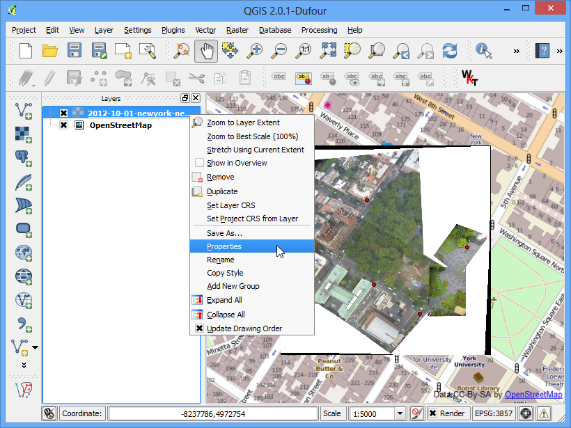

Georeferenziare immagini aeree
[ Download PDF A4
Letter ]
Nel tutorial Georeferenziare mappe e carte geografiche raster abbiamo esaminato alcuni processi elementari di georeferenziazione in QGIS. Quei metodi si possono usare quando disponiamo delle coordinate sulle carte e possiamo inserire manualmente. Ma in molte occasioni non disponiamo delle coordinate sulla mappa o, ancora, abbiamo bisogno di georeferenziare un’immagine. In tali circostanze dobbiamo utilizzare come input fonti di dati georeferenziati di tipo completamente diverso. In questo tutorial imparerete ad utilizzare come riferimenti per i nostri processi di georeferenziazione gli open data esistenti e liberamente disponibili.
Descrizione del compito
Realizzeremo la georeferenziazione di un’ immagine ad alta risoluzione realizzata da un pallone areostatico usando le coordinate ricavate da OpenStreetMap.
Altri aspetti che avremo modo di apprendere nel corso dell’esercizio
Scaricare immagini ad alta risoluzione di pubblico dominio.
Usare il plugin OpenLayers in QGIS.
Convertire le coordinate in diversi sistemi di proiezione usando lo strumento a linea di comando cs2cs.
Usare un layer georeferenziato esistente per inserire dei punti GCP nello strumento Georeferenziatore.
Dare dei valori specifici di trasparenza a dati residui indesiderati in un layer.
Ottenere i dati necessari
In questo tutorial useremo delle delle straordinarie immagini aeree raccolte presso The Public Laboratory. In effetti questo sito mette a disposizione anche la versione georeferenziata delle immagini in questione, ma qui scaricheremo un immagine JPG non georeferenziata proprio per andare ad esplorare il processo di georeferenziazione in QGIS. Se vi piacciono queste visualizzazioni potete trovarle anche in Google Earth.
Scaricate l’immagine JPG di Washington Square Park, New York. Quando siete sulla pagina potete fare click con il tasto destro del mouse sul pulsante JPG, quello verde, e poi scegliere Salva l’oggetto collegato...
Procedimento
Per questa esercitazione useremo il layer di OpenStreetMap come nostro layer di consultazione. Se non l’abbiamo già installato, installiamo the OpenLayers plugin da . . Qualora fossero necessarie ulteriori informazioni riguardo i plugin vedere l’esercitazione Usare i Plugins.

Una volta installato il plugin, andate su .Questo permetterà il caricamento di un layer di “piastrelle” pre-visualizzate create dal servizio OpenStreetMap data.

Adesso avete il layer di Open Street Map caricato in QGIS. Come potete notare il Sistema di Riferimento delle Coordinate (SR) di questo layer è settato come EPSG 3857 Pseudo Mercator. E’ importante tenerne conto, perché le coordinate che ricaveremo da questo layer saranno definite all’interno di questo specifico Sistema di Riferimento.

Ora, il nostro primo obiettivo è quello di individuare in modo generale l’area che abbiamo intenzione di georeferenziare. Potreste limitarvi ad usare gli strumenti Pan (sposta mappa) e Zoom (Ingrandisci) sul layer di OpenStreetMap per trovare l’area in questione. Ma dobbiamo approfittare di questa opportunità per mostrare il funzionamento di un altro strumento che potrebbe esservi utile in futuro. Noi sappiamo che l’immagine che abbiamo scaricato è l’immagine di Washington Square Park a New York. Se fate una ricerca su quell’indirizzo, sarete in grado di individuare la corrispondente pagina di Wikipedia. Le coordinate del parco le prenderemo proprio da lì.

Noterete che le coordinate sono in Gradi/Minuti/Secondi e indicano la Latitudine e la Longitudine. Visto però che il nostro layer di consultazione è una proiezione di Mercatore avremo bisogno di coordinate di Mercatore per individuare il nostro parco. E qui è molto utile uno strumento a linea di comando chiamato cs2cs . Se avete installato QGIS da OSGeo4W installer, dovreste averlo già installato nel vostro sistema. Su Linux e su Mac viene pre-installato con QGIS. Lanciate una finestra terminale e digitate cs2cs per verificare se è installato. Gli utenti di Windows possono trovare il terminale dal menu .

Accertato che cs2cs tool è presente sul vostro sistema, è ora giunto il momento di convertire la Latitudine e la Longitudine nelle coordinate proiettate di Mercatore. Il funzionamento di questo strumento prevede che voi specifichiate un CRS sorgente e un CRS destinazione . La definizione del CRS può essere una stringa PROJ4 oppure un EPSG code.. In questo caso useremo codici EPSG sia per il CRS sorgente che per quello di destinazione, visto che li conosciamo meglio. Il modo più semplice di usare lo strumento è inserire le coordinate in input sulla linea di comando stessa. Notate che lo strumento accetta coordinate nell’ordine X Y, quindi dobbiamo inserire prima la Longitudine e poi la Latitudine. Inserite i comandi di sotto nella finestra terminale e premete Enter. Una volta che avete premuto Enter, vedrete lo strumento lavorare le coordinate e fornire in output le coordinate XY in EPSG 3857 CRS.
echo "-73d59'51\" 40d43'51\"" | cs2cs +init=EPSG:4326 +to +init=EPSG:3857
-8237364.02 4972720.34 0.00

Copiate queste coordinate e tornate su QGIS. Alla base della finestra principale di QGIS potete vedere una casella di testo chiamata Coordinata. Inserite qui le coordinate nella sequenza X,Y. Premete Enter. Vedrete un rapido spostamento della mappa, ma senza ingrandimento. Per ingrandire l’area, selezionate 1:2500 dal menu a discesa della casella Scala, accanto alla casella Coordinata e poi premete il tasto su Enter.

Voila ! Adesso potete vedere l’area di Washington Square Park sulla finestra principale di QGIS. Ora è tempo iniziare a georeferenziare. Lanciate il Georeferenziatore da . Nel caso non dovesse essere attiva questa voce di menu dovrete attivare il Georeferenziatore Raster (GDAL) da .

Nella finestra del plugin Georeferenziatore andate su . Ritrovate il file JPG che avete appena scaricato e fate click su Apri.

Nel Selettore di Sistema di Riferimento (SR) scegliete EPSG:3857 Pseudo Mercator

Adesso fate click sul pulsante Aggiungi Punti sulla barra degli strumenti e selezionate sull’immagine dei punti che siano collocati in posizioni facilmente identificabili come ad esempio angoli stradali, intersezioni, pali etc. Sono questi, in genere, i punti di controllo che dobbiamo privilegiare in questo tipo di lavoro.

Quando farete click sull’immagine per definire la posizione del punto di controllo, vedrete apparire una finestra di dialogo pop-up che vi chiederà di inserire le coordinate della mappa. Fate click sul pulsante Dalla mappa.

- Find the same location in your reference layer, i.e. the OpenStreetMap
layer and click there. The coordinates are auto-populated from your click
on the map canvas. Click Ok. Similarly, choose at least 4 points on the
image and add their coordinates from the reference layer.

Adesso andate su

Scegliete le impostazioni nel modo indicato nella figura in basso. Nel menu a discesa metodo di campionamento scegliete Vicino più prossimo e alla voce SR di destinazione mettete EPSG:3857. Assicuratevi che la casella Carica in QGIS quando fatto sia spuntata. Fate click su OK. Tornate nella finestra Georeferenziatore . Andate su . Quest’azione darà inizio al processo di rimodellazione dell’immagine usando i GCPs e verrà in tal modo creato il raster che ci eravamo proposti di realizzare.

Quando il processo è finito, vedrete finalmente il layer georeferenziato caricato in QGIS. Se tutto è andato bene, lo vedrete perfettamente sovrapposto al layer di OpenStreetMap.

Per rendere il nostro lavoro più gradevole, togliamo i punti in bianco e nero che non appartengono al nostro dato. Tasto destro sul layer della nostra immagine e scegliete Proprietà.

Portatevi sulla scheda Trasparenza. Vogliamo specificare che i pixel bianchi oppure neri non sono valori del dato e dovrebbero essere resi trasparenti. Mettete dunque il valore 0 alla voce Valori nulli aggiuntivi. Inoltre, alla voce Opzioni di trasparenza personalizzate, fate click sul pulsante + e scegliete 255 come pixel trasparenti per ciascuna banda di colore, infine, inserite 100 come Percentuale di trasparenza. Click su OK. Adesso dovreste vedere la vostra immagine perfettamente sovrapposta al layer di consultazione.

Adesso vedrete la vostra immagine georefenziata sovrapporsi al layer di rifermento e consultazione.